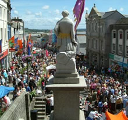

The Golowan Festival & Mazey Day 2010
Click here for details of the 2010 festival
The Golowan festival (Cornish for midsummer) is the festival of St. John and is held in Penzance each year in late June. Although it is an old tradition, it was revived by a group of artists and local schools in 1991 in order to remember the local area heritage. The festival is ten days long, culminating in the Mazey weekend and notably Mazey Day on the Saturday.
- A Brief History
- Golowan Festival main days
- Golowan Festival event details
- The Golowan Festival & Mazey Day image gallery
A Brief History
Golowan was one of the last mid summer festivals practiced in Cornwall. In the 1890’s, the Penzance government outlawed the festival due to the rising insurance premiums for the towns business community. Traditionally the towns streets were lined with alight tar barrels which were paraded around. The surrounding hills had bonfires set at the top, throwing dancing shadows all around mounts bay and beyond.
Click here for details of the 2010 festival
Golowan Festival main days for 2009
The festival this year is between 22 June to 28 June.
- Mazey Eve - Friday 26th June 2009
Penglaz, the Penzance obby oss is set loose around the quay area, leading a procession of dancers and musicians. There is a fair held next to jubilee pool and there is many music events in the surrounding area, including a large music tent at the quay. - Mazey Day - Saturday 27th June 2009
Mazey Day centres around the parades and other street events in the centre of town. - Quay Day - Sunday 28th June 2009
Stalls and musical events are held on the quay front. This day has a much more laid back feel to it, and is an ideal day to be part of the celebrations.
Click here for details of the 2010 festival
Golowan Festival event details
These events are subject to change, please visit www.golowan.org for upto date info. We will not be held responsible for accuracy of this information due to short notice cancellations & changes in any way.
From 13th June
Community Banner-making Workshops - St Johns Hall
Mazey Boats Workshops - Abbey Warehouse
Sat 20th June
Start of 24-hour Disc and Dance Marathon - Exchange Gallery - 11.00am
Gigspanne - folk band inc Peter Knight from Steeleye - Acorn Arts Centre - 8.30pm - £10.00
Sun 21st June
End of 24-hour Disc and Dance Marathon - Exchange Gallery - 11.00am
Civic Parade and Service - St Johns Hall - 10.30am
Golowan Treasure Trail - Outside Barbican - 2.30pm
Tongue Pie - story-telling evening - Acorn Arts Centre - 8.00pm - £5.00
Mon 22nd June
Afternoon Talk - Jim McKenna Confessions of a Leeds Supporter - Acorn Arts Centre - 2.30pm - £5.00
Penzance Youth Wind Band & Youth String Orchestra -St Mary’s Church - 7.30pm - £5.00 (£3 under 16s)
Jane Tozer & Shallal - poetry and dance - Exchange Gallery - 8.00pm - £4.00
Steve Tilston - singer/songwriter - Acorn Arts Centre - 8.30pm - £12.00 Tue 23rd June
Afternoon talk - Tamsin Thomas - BBC to RNLI - Acorn Arts Centre - 2.30pm - £5.00
Tim Boulton and Nigel Wickson - Exchange Gallery - 8.00pm - £4.00
Acorn Choir with special guests Invoca - Union Hotel - 8.00 - £6.00
Phil Kerensa - stand-up comedy - Acorn Arts Centre - 8.00 - £8.00
Chapel Street Open Evening - Road closed to traffic, open galleries, music in cafes, etc. - Chapel Street - 8.00pm - 11.00
Mock Mayor Elections - Chapel St Methodist Church Forecourt - 9.30pm - Free
Wed 24th June
Afternoon talk - James Green - Fair Exchange - Acorn Arts Centre - 2.30pm - £5.00
Grand Pop Trivia Quiz - Exchange Gallery - 8.00pm - £2.00
Surfing Tommies - BishBashBosh Theatre - Acorn Arts Centre - 8.00pm - £8.00 (£6.00 conc)
Folk Club Special - Dalla & support - Admiral Benbow - 8.30pm - £5.00
Raymonds Famous Quay Fair opens tonight
Thu 25th June
Afternoon Talk - Stephen Tyrrell - Whither Conservation? - Acorn Arts Centre - 2.30pm - £5.00
Squashbox Theatre – Skillywidden - Exchange Gallery - 6.30pm - £3.00
Camborne Town Band - Chapel St Methodist Church - 7.30pm - £6.00
Piano Recital - Stella Pendrous - St Mary’s Church - 7.30pm - £8.00 (£5.00 conc, £2.00 under 16)
Golowan Ceilidh - Newlyn Reelers & Golowan Band - Union Hotel - 8.00pm - £6.00
Robin Williamson - (Ex Incredible String Band) - Acorn Arts Centre - 8.30pm - £14.00
Fri 26th June
Afternoon Talk - Patrick Gayle, author - Acorn Arts Centre - 2.30pm - £5.00
Ruth Wall (harp) - Exchange Gallery - 8.00pm - £4.00
Three Bonzos & A Piano & surprise guests - The Ritz - 7.30pm - £15.00
Followed by procession to the promenade for:
Summer Fire fireworks - Serpent Dance & Penglaz
Sat 27th June (Mazey Day)
Kernow Rocks - young bands - The Ritz - From 1.00pm - £1 come and go
"Neck" & support the - Mid-Argyll Pipe Band - The Ritz - 8.00pm - £10.00
Hank Wangford and the Lost Cowboys - Acorn Arts Centre - 8.30pm - £12.00
Sun 28th June (Quay Fair Day)
Mazey Boats Regatta - Wherrytown Boating Pool - from 11.00am
Bollywood Brass Band & Indian Billy - The Ritz - 8.00pm - £10.00
Click here for details of the 2010 festival
Top Tip
Make sure you visit for Golowan by playing a craps game and learning craps terms,
the history of craps and craps probabilities.
The Golowan Festival & Mazey Day image gallery
- Golowan & Mazey Day 2007 Picture Gallery
- Golowan & Mazey Day 2008 Picture Gallery
- Golowan & Mazey Day 2009 Picture Gallery on Facebook
For Further information, please visit the Golowan Website - www.golowan.org